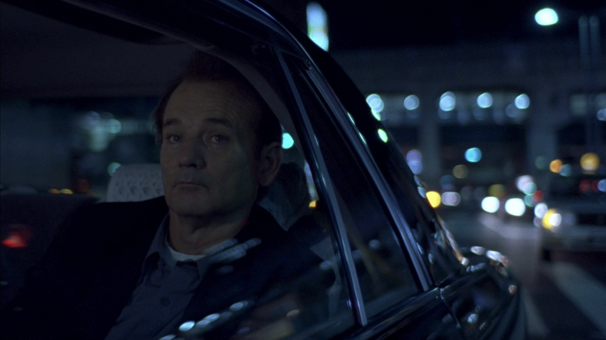
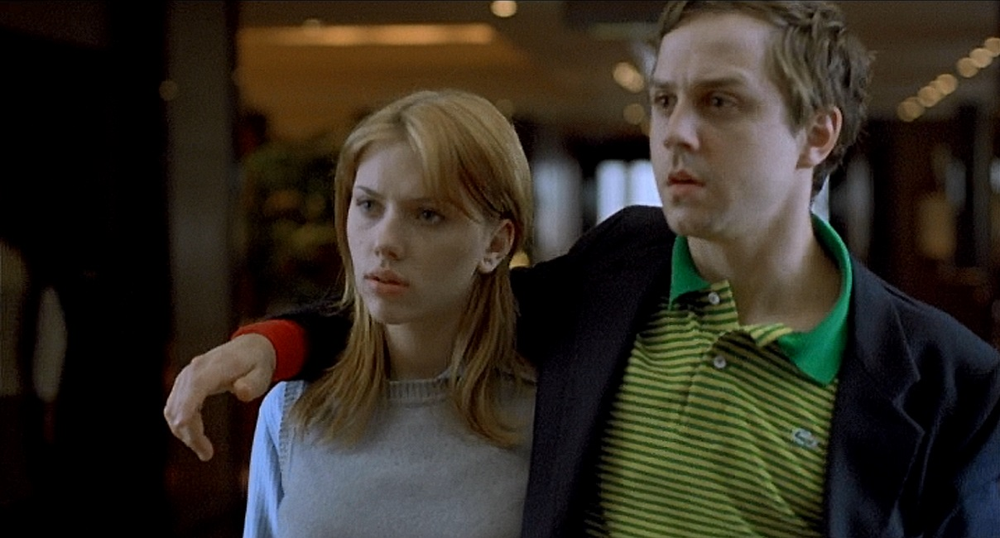
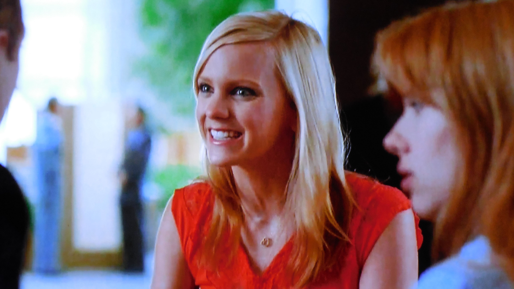

Personajes
Bob Harris (Bill Murray)
Bob es una estrella de cine cuya luz se está apagando, atrapado en la paradoja de ser mundialmente famoso pero sentirse completamente invisible. Su presencia en Tokio es puramente transaccional: está ahí por el dinero de un comercial de whisky que desprecia íntimamente.
Físicamente, Bob encarna el "jet lag" existencial; sus movimientos son pesados, su mirada está siempre un segundo detrás de la acción y su vestuario (el esmoquin impecable pero rígido, las batas de hotel demasiado grandes) acentúa su incomodidad. Emocionalmente, está desconectado de su familia, comunicándose con su esposa a través de faxes fríos sobre muestras de alfombras. Su encuentro con Charlotte no es un romance convencional, sino un reconocimiento mutuo de dos náufragos que han encontrado a alguien que habla su mismo "idioma" de soledad.

Charlotte (Scarlett Johansson)
Charlotte representa la parálisis intelectual y emocional que sigue a la graduación universitaria. Es una joven filósofa que mira el mundo con una mezcla de curiosidad académica y tristeza profunda. Se siente como un accesorio en la vida de su esposo, un fotógrafo que vive en la superficie de las cosas.
Visualmente, ella es el contraste suave frente al neón agresivo de Tokio. La vemos a menudo a través de reflejos en ventanas o sentada en posiciones fetales, intentando ocupar el menor espacio posible en un mundo que no comprende. Su peluca rosa es su único grito de rebelión visual, un intento efímero de encajar en el brillo de la ciudad. Su conflicto no es la falta de opciones, sino la falta de dirección; está esperando una señal que le diga que su vida ha comenzado de verdad, y encuentra en Bob al único adulto que es honesto sobre el hecho de que esa señal quizás nunca llega.
John (Giovanni Ribisi)
John es el esposo de Charlotte y actúa como el motor de la alienación de ella. Es un fotógrafo de moda y celebridades que vive para la próxima captura, para el próximo saludo superficial y para mantener una imagen de éxito constante.
A diferencia de los protagonistas, John nunca tiene "jet lag" porque nunca se detiene a sentir. Su lenguaje es rápido, lleno de tecnicismos y nombres de famosos (como Kelly). Representa la falta de empatía no por maldad, sino por negligencia; está tan sumergido en el "brillo" de su carrera que es incapaz de notar que su esposa se está desvaneciendo frente a sus ojos. Es la encarnación de la conectividad moderna que, irónicamente, produce una desconexión total con los seres queridos.

Kelly (Ana Faris)
Kelly es una actriz de Hollywood que aparece en el hotel como un recordatorio de todo lo que Bob detesta de su propia industria. Es ruidosa, exagerada y carece de cualquier tipo de filtro o introspección.
Su función en la historia es vital para resaltar la inteligencia y sensibilidad de Charlotte. Mientras Kelly habla de dietas, anécdotas vacías con directores y se promociona a sí misma en cada frase, Bob y Charlotte intercambian miradas de complicidad. Kelly es la representación de la "traducción perdida" en su nivel más básico: alguien que habla el mismo idioma que ellos, pero con quien es imposible comunicarse a un level humano.
